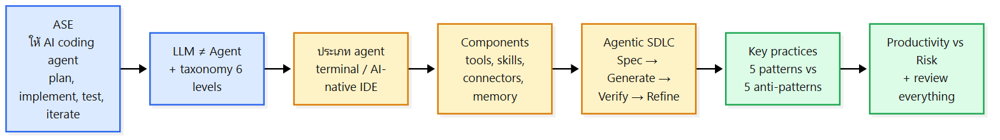
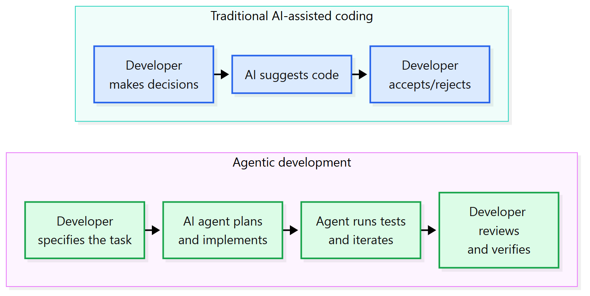
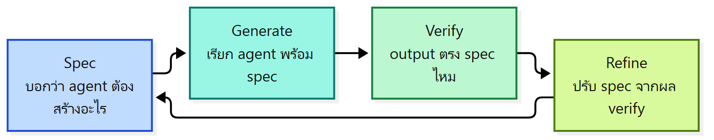

ภาพรวมบทนี้: บทสุดท้ายของวิชา พูดถึงการทำงาน software engineering ร่วมกับ AI coding agent ซึ่งเปลี่ยน วิธีจัดงาน ไม่ใช่แค่เพิ่มเครื่องมือใหม่ เนื้อหามี 5 ส่วนตาม Topics: (1) ASE คืออะไร (LLM vs agent, taxonomy 6 ระดับ, ประเภท agent) (2) ส่วนประกอบของ agent (tools, skills, connectors, memory) (3) Agentic SDLC (Spec → Generate → Verify → Refine) (4) Key practices 5 คู่ (5) Productivity vs Risk
บทนี้ดัดแปลงจาก book.agentic-swe.dev (chapter 6) และเชื่อมกับบทก่อน ๆ หลายเรื่อง เช่น requirement (spec), code review, testing, commit

1. Agentic Software Engineering (ASE) คืออะไร?
แก่นASE ใช้ AI coding agent วางแผน เขียน ทดสอบ และวนแก้งานพัฒนาซอฟต์แวร์ เป็นการเปลี่ยนวิธีจัดงาน ไม่ใช่แค่เครื่องมือใหม่ และ developer ยังต้องรักษามาตรฐาน คุณภาพ และการกำกับดูแล
- ASE ใช้ AI coding agents เพื่อ plan, implement, test และ iterate งานพัฒนาซอฟต์แวร์
- เป็น การเปลี่ยนวิธีจัดระเบียบงาน SE ไม่ใช่แค่ programming tool ใหม่
- AI agent เพิ่ม productivity ได้ แต่ developer ยังต้องรักษา engineering standards, quality และ oversight
Traditional AI-assisted coding vs Agentic development (สไลด์ 5):

| Traditional AI-assisted coding | Agentic development | |
|---|---|---|
| ใครตัดสินใจ/วางแผน | Developer ตัดสินใจ | Developer บอก task แล้ว agent วางแผนเอง |
| AI ทำอะไร | แนะนำโค้ด | plan + implement + รัน test + iterate |
| Developer ทำอะไรตอนท้าย | accept / reject คำแนะนำ | review และ verify ผลงาน |
2. LLM กับ AI coding agent ต่างกันยังไง?
แก่นLLM แค่ทำนายข้อความต่อ ไม่มี state ทำ action จริงไม่ได้ และไม่รู้ว่าโค้ดที่เขียนรันได้ไหม ส่วน agent ใช้ LLM เป็นสมองบวกกับ tools จึงอ่านไฟล์ รันคำสั่ง รัน test และวนปรับแผนได้เอง
LLM ≠ AI coding agent
| LLM (Large Language Model) | AI coding agent | |
|---|---|---|
| นิยาม | neural network ที่ฝึกจากข้อความ ทำนายข้อความต่อที่น่าจะเป็นที่สุด | ทำงาน SE ได้ อัตโนมัติ (autonomously) |
| สมอง | — | ใช้ LLM เป็น reasoning engine + tools โต้ตอบกับ environment |
| State | ไม่มี persistent state ระหว่างการเรียกแต่ละครั้ง | |
| Action | ทำ action ในโลกจริงโดยตรงไม่ได้ | อ่านโค้ด, แก้ไฟล์, รันคำสั่ง, รัน test |
| รู้ผลไหม | ไม่รู้ว่าโค้ดที่สร้างถูกรันหรือใช้ได้จริง | plan, execute, observe ผล และ iterate ไปหาเป้าหมาย |
ตารางความสามารถ (สไลด์ 7):
| Capability | LLM alone | AI coding agent |
|---|---|---|
| Generate code | Yes | Yes |
| Read files from disk | No | Yes |
| Execute shell commands | No | Yes |
| Run tests and read results | No | Yes |
| Maintain state across steps | No | Yes |
| Adapt plan based on results | No | Yes |
| Take irreversible actions | No | Yes |
💡 สังเกต: สิ่งเดียวที่ LLM ทำได้เหมือน agent คือ generate code ส่วน "take irreversible actions" ที่ agent ทำได้ คือเหตุผลที่ต้องระวังเรื่องความเสี่ยงในหัวข้อ 8
3. Taxonomy of AI-assisted SE มีกี่ระดับ?
แก่นมี 6 ระดับ (0–5) จากเขียนเองล้วนไปจนถึง AI อิสระเต็มที่ เทียบได้กับระดับรถขับเคลื่อนอัตโนมัติของ SAE
| Level | Name | Core Function | Representative Technologies | SAE Parallel |
|---|---|---|---|---|
| 0 | Manual Coding | คนแปลงไอเดียเป็นโค้ดเอง ไม่มี AI | Plain text editors (Notepad, vi, Emacs) | Level 0: No Automation |
| 1 | Token Assistance | ทำนาย token ถัดไป จาก context ที่กำลังแก้ | IDE autocomplete (IntelliSense, basic tab-completion) | Level 1: Driver Assistance |
| 2 | Task-Agentic | สร้าง code block, test หรือ artefact ทั้งชิ้น จากคำอธิบาย task | GitHub Copilot, Amazon CodeWhisperer, Tabnine | Level 2: Partial Automation |
| 3 | Goal-Agentic | วางแผนหลายขั้นและลงมือทำ จาก technical goal | Claude Code, Cognition's Devin, Google Jules, OpenAI Codex | Level 3: Conditional Automation |
| 4 | Specialised Domain Autonomy | แปลง mandate กว้าง ๆ เป็นเป้าหมายจริง ใน technical domain ที่กำหนด | GPT-5 (frontend web development), specialised security agents | Level 4: High Driving Automation |
| 5 | General Domain Autonomy | อิสระสูงใน ทุก technical domain ทุกขนาด | Conceptual — ยังไม่มีระบบ production ณ 2025 | Level 5: Full Driving Automation |
💡 จำ: 0 เขียนเอง → 1 เดา token → 2 ทำ task → 3 ทำ goal → 4 ทั้ง domain → 5 ทุก domain (ยังไม่มีจริง)
4. AI coding agent มีกี่ประเภท?
แก่นมี 2 ประเภท: agent ใน terminal ที่ใช้ file system กับ shell เป็นสภาพแวดล้อมหลัก และ AI-native IDE ที่ฝัง agent ไว้ใน code editor
| ประเภท | ลักษณะ | ตัวอย่างในสไลด์ |
|---|---|---|
| AI coding agent in the terminal | ทำงาน ใน terminal โดยตรง ใช้ file system และ shell เป็นสภาพแวดล้อมหลัก | Claude Code: CLI ที่รันใน terminal อ่านไฟล์ที่เกี่ยวข้อง เขียนโค้ด รัน test และวนแก้ โดยไม่ต้องเปิด browser หรือ IDE Gemini CLI: agent ใน terminal ที่ใช้ Gemini model family ของ Google |
| AI-native IDEs | ฝัง agentic AI ใน code editor | Cursor: agent เห็น codebase ทั้งหมด, เข้าใจไฟล์ที่เปิดอยู่, รันคำสั่งใน terminal ในตัว และแก้ไฟล์ที่เปิดอยู่ได้ทันที ผู้ใช้คุยผ่าน chat panel ข้าง editor Windsurf: agent สังเกตเชิงรุก ว่าผู้ใช้ทำอะไร แล้ว เสนอแนะเองโดยไม่ต้องสั่ง เหมือน pair programmer ที่เห็นว่าเราติด |
⚠️ ความต่าง Cursor vs Windsurf ตามสไลด์: Cursor = คุยผ่าน chat panel | Windsurf = proactive เสนอเองโดยไม่ต้อง prompt
5. AI coding agent ประกอบด้วยอะไร?
แก่น4 ส่วน: tools (action พื้นฐาน), skills (ความสามารถที่ประกอบจากหลาย tool ใช้ซ้ำได้), connectors (เชื่อมระบบภายนอก) และ memory (ข้อมูลที่จำข้ามขั้น/session/agent)
| Component | นิยาม |
|---|---|
| 1) Tools | primitive actions ที่ agent ทำได้ มี input/output ชัดเจน |
| 2) Skills | ความสามารถที่ใช้ซ้ำได้ ประกอบจาก tool call หลายครั้ง |
| 3) Connectors | การเชื่อมที่ให้ agent เข้าถึง ระบบภายนอกนอกเหนือ file system (เช่น database, API) |
| 4) Memory | ข้อมูลที่ คงอยู่ข้าม step, session และ agent |
5.1 Tools
| Tool | Description |
|---|---|
read_file |
อ่านเนื้อหาไฟล์ที่ path ที่กำหนด |
write_file |
เขียนหรือเขียนทับไฟล์ที่ path ที่กำหนด |
run_command |
รัน shell command แล้วคืน stdout/stderr |
search_code |
ค้น codebase หา pattern หรือ symbol |
fetch_url |
ดึงเนื้อหาจาก URL |
create_branch |
สร้าง git branch ใหม่ |
submit_pr |
เปิด pull request พร้อม diff และ description |
5.2 Skills
- มักนิยามเป็น reusable prompts หรือ prompt templates เก็บไว้กับโปรเจกต์
- ใน Claude Code เรียก skill ด้วย slash commands (เช่น
/review,/test) - ตัวอย่าง skill:
- code-review: อ่าน diff, เช็กกับ checklist, คืน review แบบมีโครงสร้าง
- write-tests: รับ function signature + docstring แล้วสร้าง unit test suite
- security-scan: ไล่ codebase หาช่องโหว่ OWASP Top 10
- refactor-rename: เปลี่ยนชื่อ symbol ให้ตรงกันทุกไฟล์
5.3 Connectors
- LLM เองสร้างได้แค่ข้อความ ต้องเข้าถึง resource ภายนอกจึงทำงาน SE ได้
- ตัวอย่างงาน:
- อ่านโค้ดจาก GitHub
- เข้าถึงไฟล์ในโปรเจกต์
- สร้าง GitHub issue
- ดึงข้อมูลจาก database
- ทำงานกับระบบ CI/CD
- สร้าง pull request
- เข้าถึง documentation หรือ API
5.4 Memory 4 ประเภท
| Memory type | Scope | Persistence | Example |
|---|---|---|---|
| In-context | Single session | Until session ends | บทสนทนาปัจจุบัน, ไฟล์ที่เปิดอยู่ |
| External | Across sessions | Indefinite | ไฟล์ CLAUDE.md, vector database |
| Episodic | Across tasks | Configurable | สรุปงานที่ agent เคยทำ |
| Semantic | Across agents | Configurable | ข้อเท็จจริงร่วมเรื่อง codebase หรือ team conventions |
💡 จำ scope ไล่จากแคบไปกว้าง: session เดียว → ข้าม session → ข้าม task → ข้าม agent
6. Agentic SDLC ทำงานยังไง?
แก่นวนซ้ำ 4 ขั้น: Spec (บอกให้ชัดว่าต้องได้อะไร) → Generate (ให้ agent สร้าง) → Verify (เช็กว่าตรง spec ซึ่งต้องใช้วิจารณญาณคนมากที่สุด) → Refine (เอาผลไปปรับ spec)

- สไลด์ถามทวน "What is a traditional SDLC?" (เชื่อมกับ process models ใน L2) แล้วบอกว่า agentic SDLC วนซ้ำ (iterative) 4 process
6.1 Spec
แก่นspec บอกว่า agent ต้องสร้างอะไร ต้องแม่นยำและครบ จึงจะได้ output ที่ถูก
spec ที่ครบสำหรับ AI agent มี 6 ส่วน:
| ส่วน | ตอบคำถาม |
|---|---|
| Context | component นี้คืออะไร อยู่ตรงไหนของระบบ |
| Inputs and outputs | function รับอะไร ต้องคืนอะไร |
| Behaviour rules | อย่างน้อย 5 ข้อ ที่เป็นพฤติกรรมชัดเจน |
| Constraints | function ต้องไม่ทำ อะไร |
| Examples | คู่ input-output ครอบคลุม normal case, edge case, error case |
| Quality attributes | performance, security, style conventions |
ตัวอย่าง: calculate_average() (สไลด์ 22–24)
| ส่วน | รายละเอียด |
|---|---|
| Context | คำนวณคะแนนเฉลี่ยของนักศึกษา เป็นส่วนหนึ่งของ grading component ในระบบจัดการนักศึกษา |
| Inputs | list ของคะแนนตัวเลข 0–100 |
| Outputs | ค่าเฉลี่ยเลขคณิต (arithmetic mean) เป็นตัวเลข |
| Behavior rules | 1. คำนวณค่าเฉลี่ยเลขคณิตของทุกคะแนน 2. รับทั้งจำนวนเต็มและทศนิยม 3. คืนผลเป็นทศนิยม 4. รับคะแนน 0–100 (รวมขอบ) 5. ปฏิเสธคะแนน < 0 หรือ > 100 6. ปฏิเสธ list ว่าง (หาค่าเฉลี่ยไม่ได้) 7. ไม่แก้ list คะแนนต้นฉบับ |
| Constraints | ห้ามเปลี่ยน input list, ห้ามปัดผลถ้าไม่ได้สั่ง, ห้ามเงียบใส่คะแนนที่ผิด, ห้ามรับค่าที่ไม่ใช่ตัวเลข, ห้ามใช้ external services หรือ database |
| Error | คืน error ที่เหมาะสมถ้า input ผิดหรือว่าง |
| Quality attributes | Performance: O(n) |
Examples:
| Input | Expected output |
|---|---|
[80, 90, 70] |
80.0 |
[0, 100] |
50.0 |
[75.5, 80.5] |
78.0 |
[] |
Error |
[-10, 60] |
Error |
[80, "70"] |
Error |
💡 เชื่อมกับ L12–13: examples ใน spec ครอบคลุม normal / edge (
[0, 100]= ขอบ) / error case คล้ายการทำ ECP + BVA⚠️ สไลด์ 22 สะกดหัวข้อว่า "Bahavior rules" (ที่ถูกคือ Behavior)
6.2 Generate
แก่นเรียก agent พร้อม spec ให้สร้างโค้ด test เอกสาร หรือ artefact อื่น โดยต้องตัดสินใจ 3 เรื่อง: model ไหน, agent ไหน, ใส่ context อะไร
| การตัดสินใจ | หลัก |
|---|---|
| Which model | เลือกตามความยากของงาน: model ที่เก่งกว่า สำหรับงาน security-critical หรือ reasoning ซับซ้อน, model ที่เร็ว สำหรับ boilerplate และ scaffolding |
| Which agent | terminal agent หรือ AI-native IDE ตามงานและบริบท |
| What context to include | agent ต้องรู้ ไฟล์ไหน, conventions อะไร, background อะไร |
6.3 Verify
แก่นตรวจว่า output ตรง spec ไหม เป็นขั้นที่ต้องใช้วิจารณญาณทางวิศวกรรมของคนมากที่สุด ใช้ checklist 8 หมวด
Structured verification checklist for AI-generated code:
| Category | Questions |
|---|---|
| Functional correctness | โค้ดทำตามที่ spec บอกครบทุก case ไหม |
| Edge cases | จัดการ input ว่าง, null, boundary ได้ไหม |
| Security | มี injection risk, auth พัง หรือ unsafe defaults ไหม |
| Error handling | error ถูกแสดงออกมา ไม่ใช่เงียบหายไปไหม |
| Type correctness | type ตรงไหม type checker ผ่านไหม |
| Test coverage | test ที่สร้างมา test พฤติกรรมตาม spec จริงไหม |
| Conventions | ตาม style, naming, structure ของโปรเจกต์ไหม |
| No accidental side effects | แก้ state ที่ไม่ควรแตะไหม |
💡 เชื่อมกับ L10: หลายหมวดคล้าย code review checklist (security, error handling, testing, readability/conventions)
6.4 Refine
แก่นใช้ผล verify หาจุดที่ implementation ไม่ตรง spec แล้วปรับ เป้าหมายของขั้นนี้คือ "ปรับ spec ให้ดีขึ้น"
- agent ปรับส่วนที่ผิดหรือไม่ตรง ก่อนสร้างเวอร์ชันถัดไป
- Refinement triggers ที่พบบ่อย:
| เกิดอะไรขึ้น | แก้ยังไง |
|---|---|
| test fail | เพิ่ม case ที่ fail เป็น example ใน spec |
| agent ใช้ library ที่ deprecated | เพิ่ม constraint ("do not use X, use Y") |
| output เข้าใจ domain concept ผิด | เพิ่ม นิยามอธิบาย |
| โค้ดถูกแต่ ผิด convention | เพิ่ม convention ลงใน context |
- ⭐ เป้าหมายของ Refine คือปรับปรุง specification (ไม่ใช่แค่แก้โค้ด)
7. Key practices for ASE (pattern vs anti-pattern)
แก่นHassan (2025) ระบุ 5 pattern ที่แยก AI-native engineer ที่เก่งออกจากคนที่แค่ใช้ tool ใหม่โดยไม่เปลี่ยนวิธีทำงาน แต่ละ pattern มี anti-pattern (failure mode) คู่กัน
| Pattern (ควรทำ) | Anti-pattern ที่มันแก้ |
|---|---|
| Specification-first development | Prompt-and-pray |
| Verification-driven generation | Confidence by plausibility |
| Context file discipline | Context starvation |
| Incremental delegation | Overlong agentic sessions |
| Commit granularity | Ownership transfer |
7.1 Specification-first vs Prompt-and-pray
| ✅ Specification-first development | ❌ Prompt-and-pray |
|---|---|
| เขียน spec ให้ครบก่อน สั่ง agent implement | ให้ prompt คลุมเครือ รับ output แล้ว ship เลยโดยไม่ verify อย่างเป็นระบบ |
| คิด requirement ให้จบก่อน แทนการแก้ prompt ไปเรื่อย ๆ ระหว่าง agent ทำงาน | test ผ่านไม่ได้รับประกัน ว่าตรง spec หรือ security requirement |
| spec ชัดและครบ มักได้ผลดีกว่า |
7.2 Verification-driven generation vs Confidence by plausibility
| ✅ Verification-driven generation | ❌ Confidence by plausibility |
|---|---|
| กำหนดวิธีเช็กความถูกต้องก่อน generate โค้ด | คิดเอาว่าโค้ดถูก เพราะดูมืออาชีพ คุ้นตา ไม่มี error |
| เตรียม test case, behavioral requirements, security checks ไว้ล่วงหน้า | Plausible ≠ Correct: โค้ดจาก AI ยังต้อง verify |
| เกณฑ์ verify เป็นตัว นิยามว่า "ถูก" คืออะไร |
7.3 Context file discipline vs Context starvation
| ✅ Context file discipline | ❌ Context starvation |
|---|---|
ดูแล context file ระดับโปรเจกต์ (เช่น CLAUDE.md, .cursorrules) |
ให้ agent รู้ context น้อยเกินไป เรื่องโปรเจกต์ conventions หรือ architecture |
| ข้อมูลต้อง ถูกต้องและอัปเดต | ได้โค้ดที่ ไม่เข้ากับระบบเดิม |
| ข้อมูลเก่าทำให้ agent ใช้ library, dependency หรือแนวทางผิด |
7.4 Incremental delegation vs Overlong agentic sessions
| ✅ Incremental delegation | ❌ Overlong agentic sessions |
|---|---|
| เริ่มจาก งานเล็กที่นิยามชัด | ปล่อย agent แก้หลายอย่างใน session ยาวต่อเนื่อง |
| ค่อย ๆ มอบงานใหญ่ขึ้นเมื่อมั่นใจขึ้น | ผิดตั้งแต่ต้น → กลายเป็นฐานของการเปลี่ยนแปลงต่อ ๆ มา |
| ความไว้ใจขึ้นกับประเภทงาน ไม่ใช่ agent ทั้งตัว เช่น agent อาจเก่งเรื่อง test แต่เขียน authentication ไม่ปลอดภัย | แก้ทีหลังอาจต้อง ย้อนหรือทำใหม่หลายขั้น |
7.5 Commit granularity vs Ownership transfer
| ✅ Commit granularity | ❌ Ownership transfer |
|---|---|
| commit โค้ดจาก AI บ่อยและเป็นชิ้นเล็กที่ review ได้ | มองว่าโค้ดที่ AI สร้างเป็น "ความรับผิดชอบของ AI" |
| อย่า commit ก้อนเดียวหลายร้อยหลายพันบรรทัด | ที่ถูกคือ developer ยังรับผิดชอบโค้ดที่ตัวเอง review, accept และ commit ไม่ว่าใครเป็นคนสร้าง |
| commit เล็ก review, เข้าใจ, verify และ undo ง่ายกว่า |
💡 เชื่อมกับ L10: "Commit small and often" เป็น good implementation practice เหมือนกัน
8. Productivity vs Risk
แก่นAI เพิ่ม productivity ได้มากกับงาน routine ที่นิยามชัด แต่ได้น้อยกับ logic ใหม่ architecture และการตัดสินใจกับ stakeholder และมีความเสี่ยง 5 ด้าน
8.1 Productivity
- AI coding agent เพิ่ม productivity ได้มาก
- AI ได้ผลดีเป็นพิเศษกับ:
- Routine code generation
- Test scaffolding
- Documentation
- Boilerplate code
- Code translation
- ผลขึ้นกับประเภทงาน:
| ประเภทงาน | Productivity gain |
|---|---|
| Routine, well-defined tasks | อาจเพิ่มมาก |
| Novel logic, architecture, stakeholder decisions | เพิ่มได้จำกัด |
- AI ช่วยหลัก ๆ กับงานที่มันทำได้ดี ส่วนงานที่ต้องใช้ วิจารณญาณของคน ความรู้ domain และการสื่อสาร ยังพึ่งคนเป็นหลัก
8.2 Risk 5 ด้าน
| ความเสี่ยง | ความหมาย |
|---|---|
| Overreliance & skill loss | พึ่ง AI มากเกินไป → ทักษะและวิจารณญาณของ developer ลดลง จนตรวจงาน AI ได้ยากขึ้น |
| Responsibility & accountability | developer และองค์กร ยังต้องรับผิดชอบ โค้ดจาก AI และผลที่ตามมา |
| Intellectual property | โค้ดจาก AI อาจ คล้ายโค้ดที่มีลิขสิทธิ์หรือ open-source ต้องดู licensing และนโยบายองค์กร |
| Increasing impact of mistakes | agent อิสระมากขึ้น → "blast radius" ใหญ่ขึ้น เมื่อผิดพลาด ให้ ปรับระดับอิสระตามว่า action ย้อนกลับได้แค่ไหน |
| Security risks | agent ที่ต่อกับระบบภายนอกอาจโดน prompt injection และการโจมตีอื่นผ่าน เนื้อหาที่ไม่น่าเชื่อถือ |
9. Summary
แก่นreview ทุกอย่าง, เข้าใจสิ่งที่ commit, และกำหนดขอบเขตการมอบงาน: action ที่ย้อนได้มอบได้แต่ต้อง review ส่วน action ที่ย้อนไม่ได้ต้องให้คนอนุมัติก่อน
- Review everything: มองโค้ดจาก AI เป็น first draft review ให้ดีก่อน commit
- Understand what you commit: ห้าม commit โค้ดที่ตัวเองไม่เข้าใจ ให้ agent อธิบาย อ่าน documentation และ verify เอง
- Set delegation boundaries: ตัดสินใจว่างานไหนมอบได้ งานไหนต้องให้คนอนุมัติ
| ประเภท action | ทำยังไง | ตัวอย่าง |
|---|---|---|
| Reversible | มอบได้ + review | แก้ไฟล์, เขียน test |
| Irreversible | ต้องให้คนอนุมัติก่อนรัน | database migration, production deployment |
คำศัพท์สำคัญ
| คำศัพท์ | ความหมาย | จำง่าย ๆ ว่า |
|---|---|---|
| ASE | ใช้ AI coding agent plan, implement, test, iterate | เปลี่ยนวิธีจัดงาน |
| LLM | neural network ทำนายข้อความต่อ | สมองอย่างเดียว |
| AI coding agent | LLM (reasoning engine) + tools ทำงานอัตโนมัติ | สมอง + มือ |
| Taxonomy 0–5 | Manual → Token → Task-Agentic → Goal-Agentic → Specialised → General | เทียบ SAE |
| AI-native IDE | ฝัง agent ใน editor (Cursor, Windsurf) | |
| Tool | primitive action มี input/output ชัด | read_file |
| Skill | reusable prompt/template ประกอบจากหลาย tool | /review |
| Connector | เชื่อมระบบภายนอก (DB, API, GitHub) | |
| In-context memory | จำใน session เดียว | |
| External memory | ข้าม session (CLAUDE.md, vector DB) | |
| Episodic memory | ข้าม task (สรุปงานเก่า) | |
| Semantic memory | ข้าม agent (ข้อเท็จจริงร่วม) | |
| Agentic SDLC | Spec → Generate → Verify → Refine | วนซ้ำ |
| Spec | context, I/O, behaviour rules (≥5), constraints, examples, quality attributes | 6 ส่วน |
| Prompt-and-pray | prompt คลุมเครือแล้ว ship ไม่ verify | anti-pattern |
| Confidence by plausibility | เชื่อเพราะดูดี (plausible ≠ correct) | anti-pattern |
| Context starvation | ให้ context น้อยไป | anti-pattern |
| Overlong agentic session | session ยาว ผิดแต่ต้นลามไปหมด | anti-pattern |
| Ownership transfer | โยนความรับผิดชอบให้ AI | anti-pattern |
| Blast radius | ขอบเขตความเสียหายเมื่อผิด | |
| Prompt injection | โจมตีผ่านเนื้อหาที่ไม่น่าเชื่อถือ |
สรุปท้ายบท / จุดที่มักออกสอบ
- ⭐ ASE = เปลี่ยนวิธีจัดงาน ไม่ใช่แค่ tool + traditional vs agentic flow
- ⭐ LLM vs agent และ ตาราง 7 capabilities (LLM ทำได้แค่ generate code)
- ⭐ Taxonomy 6 levels + ตัวอย่าง (Claude Code อยู่ level 3, level 5 ยังไม่มีจริง)
- ⭐ 2 ประเภท agent: terminal (Claude Code, Gemini CLI) vs AI-native IDE (Cursor, Windsurf)
- ⭐ 4 components: tools, skills, connectors, memory + memory 4 ประเภท
- ⭐ Agentic SDLC 4 ขั้น, spec 6 ส่วน, Generate 3 decisions, Verify checklist 8 หมวด, Refine triggers 4 แบบ (เป้าหมาย = ปรับ spec)
- ⭐ 5 patterns vs 5 anti-patterns (จับคู่ให้ถูก)
- ⭐ Productivity: routine ได้มาก / novel logic ได้น้อย + 5 risks
- ⭐ Reversible = มอบได้ + review | Irreversible = ต้องคนอนุมัติ
คู่ที่มักสับสน
| A | B | ต่างกันตรงไหน |
|---|---|---|
| LLM | AI coding agent | ทำนายข้อความ vs LLM + tools ลงมือทำได้ |
| Traditional AI-assisted | Agentic development | AI แนะนำ คนตัดสิน vs agent plan+implement+test คน review |
| Task-Agentic (L2) | Goal-Agentic (L3) | สร้างชิ้นงานจาก task vs วางแผนหลายขั้นจาก goal |
| Tool | Skill | action พื้นฐาน vs ความสามารถที่ประกอบจากหลาย tool |
| Connector | Tool | เชื่อมระบบภายนอก vs action พื้นฐานใน environment |
| External memory | Semantic memory | ข้าม session vs ข้าม agent |
| Episodic memory | Semantic memory | สรุปงานที่เคยทำ (ข้าม task) vs ข้อเท็จจริงร่วม (ข้าม agent) |
| Cursor | Windsurf | chat panel vs proactive เสนอเอง |
| Verify | Refine | เช็กว่าตรง spec vs ปรับ spec จากผล verify |
| Prompt-and-pray | Confidence by plausibility | ไม่มี spec / ไม่ verify vs เชื่อเพราะดูดี |
| Reversible action | Irreversible action | มอบได้ + review vs ต้องคนอนุมัติก่อน |